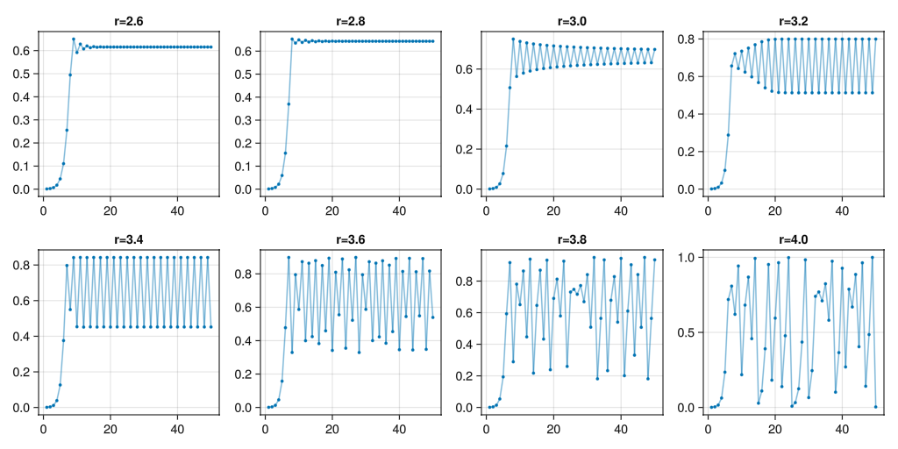
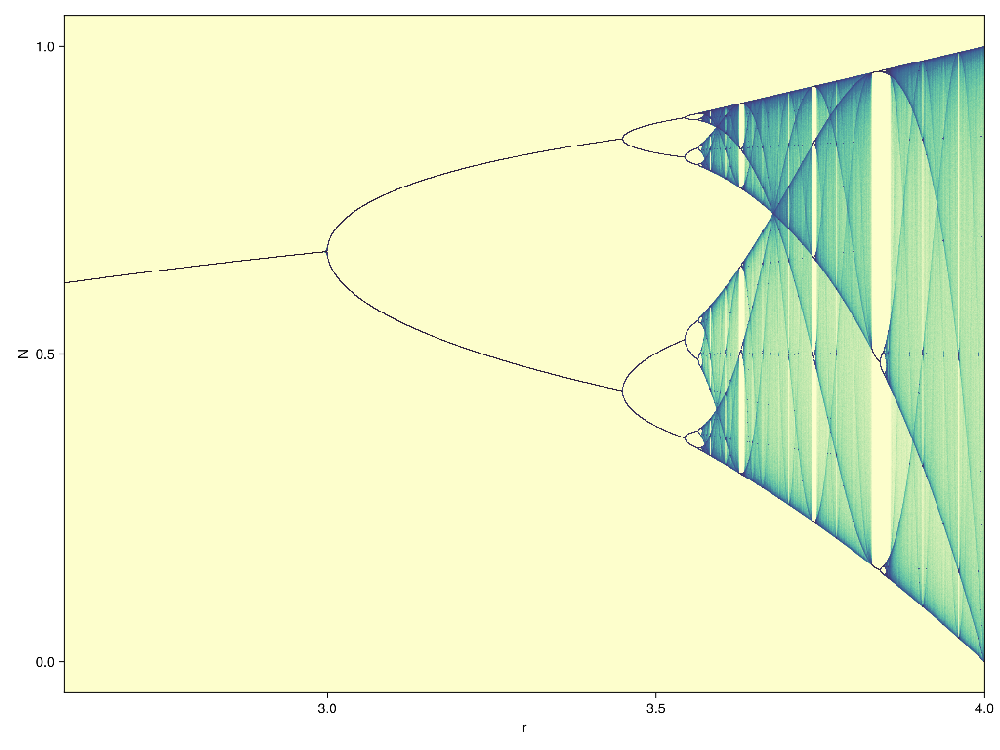

Reducing allocations on the Logistic Map
Last updated on 2026-04-14 | Edit this page
Overview
Questions
- How can I reduce the number of allocations?
Objectives
- Understand the job of the garbage collector
- Apply a code transformation to write to pre-allocated memory.
About Memory
There are roughly two types of memory in a computer program:
- stack: memory that lives statically inside a function. This memory is very fast, but the size is limited and has to be known at compile time. Examples: variables of known size created in a block scope, and released after.
- heap: memory that is associated with the entire process. Needs to be allocated. Examples: arrays, strings. In general heap allocation (and freeing) is slow: the process has to ask the OS for memory.
The freeing of heap memory is further complicated by the garbage collector. Its job is to trace references to objects to see which pieces of memory are reachable from the current program state. If there is no path from known variables to a piece of previously allocated heap memory, that memory can be freed. A loop can become particularly slow if it has a lot of small allocations.
Later on we will talk some more about memory. In the current episode we’ll see how we can reduce allocations.
Logistic map
Logistic growth (in economy or biology) is sometimes modelled using the recurrence formula:
\[N_{i+1} = r N_{i} (1 - N_{i}),\]
also known as the logistic map, where \(r\) is the reproduction factor. For low values of \(N\) this behaves as exponential growth. However, most growth processes will hit a ceiling at some point. Let’s try:
Vary r
Try different values of \(r\), what do you see?
Extra (advanced!): see the Makie
documentation on Slider. Can you make an interactive
plot?
JULIA
using Printf
let
fig = Figure()
sl_r = Slider(fig[2, 2], range=1.0:0.001:4.0, startvalue=2.0)
Label(fig[2,1], lift(r->@sprintf("r = %.3f", r), sl_r.value))
points = lift(sl_r.value) do r
take(iterated(logistic_map(r), 0.001), 50) |> collect
end
ax = Axis(fig[1, 1:2], limits=(nothing, (0.0, 1.0)))
plot!(ax, points)
lines!(ax, points)
fig
end
JULIA
#| classes: ["task"]
#| collect: figures
#| creates: episodes/fig/logistic-map-orbits.png
module Script
using IterTools
using .Iterators: take
using GLMakie
function main()
logistic_map(r) = n -> r * n * (1 - n)
fig = Figure(size=(1024, 512))
for (i, r) in enumerate(LinRange(2.6, 4.0, 8))
ax = Makie.Axis(fig[div(i-1, 4)+1, mod1(i, 4)], title="r=$$r")
pts = take(iterated(logistic_map(r), 0.001), 50) |> collect
lines!(ax, pts, alpha=0.5)
plot!(ax, pts, markersize=5.0)
end
save("episodes/fig/logistic-map-orbits.png", fig)
end
end
Script.main()There seem to be key values of \(r\) where the iteration of the logistic map splits into periodic orbits, and even get into chaotic behaviour.
We can plot all points for an arbitrary sized orbit for all values of
\(r\) between 2.6 and 4.0. First of
all, let’s see how the iterated |> take |> collect
function chain performs.
JULIA
function iterated_fn(f, x, n)
result = Float64[]
for i in 1:n
x = f(x)
push!(result, x)
end
return result
end
@btime iterated_fn(logistic_map(3.5), 0.5, 1000)That seems to be slower than the original! Let’s try to improve. We
can pre-allocate exactly the amount of memory needed. This will save
some allocations and copies that are needed when using
push! repeatedly.
Dynamicly growing vectors
The strategy for dynamically growing vectors is as follows:
- allocate more memory than is asked for.
- as long as new elements fit in the allocated size of the vector, everything is fine.
- when the allocated memory no longer fits the vector, allocate a new vector, twice the size of the old one, and copy the old data to the new vector.
This strategy turns out to be acceptable in many real world applications.
JULIA
function iterated_fn(f, x, n)
result = Vector{Float64}(undef, n)
for i in 1:n
x = f(x)
result[i] = x
end
return result
end
@benchmark iterated_fn(logistic_map(3.5), 0.5, 1000)
@profview for _=1:100000; iterated_fn(logistic_map(3.5), 0.5, 1000); endWe can do better if we don’t need to allocate:
JULIA
function iterated_fn!(f, x, out)
for i in eachindex(out)
x = f(x)
out[i] = x
end
end
out = Vector{Float64}(undef, 1000)
@benchmark iterated_fn!(logistic_map(3.5), 0.5, out)
@profview for _=1:100000; iterated_fn!(logistic_map(3.5), 0.5, out); endTry to change the 1000 into 10000. What is the conclusion? Small
allocations inside loops contribute to run-time. The
iterator |> collect pattern is usually good enough.
JULIA
#| id: logistic-map
function logistic_map_points(r::Real, n_skip)
make_point(x) = Point2f(r, x)
x0 = nth(iterated(logistic_map(r), 0.5), n_skip)
Iterators.map(make_point, iterated(logistic_map(r), x0))
endJULIA
#| id: logistic-map
function logistic_map_points(rs::AbstractVector{R}, n_skip, n_take) where {R <: Real}
Iterators.flatten(Iterators.take(logistic_map_points(r, n_skip), n_take) for r in rs)
endFirst of all, let’s visualize the output because it’s so pretty!
JULIA
#| id: logistic-map
function plot_bifurcation_diagram()
pts = logistic_map_points(LinRange(2.6, 4.0, 10000), 1000, 10000) |> collect
fig = Figure(size=(1024, 768))
ax = Makie.Axis(fig[1,1], limits=((2.6, 4.0), nothing), xlabel="r", ylabel="N")
datashader!(ax, pts, async=false, colormap=:deep)
fig
end
plot_bifurcation_diagram()
JULIA
#| classes: ["task"]
#| collect: figures
#| creates: episodes/fig/bifurcation-diagram.png
module Script
using GLMakie
using IterTools
using .Iterators: take
<<logistic-map>>
function main()
fig = plot_bifurcation_diagram()
save("episodes/fig/bifurcation-diagram.png", fig)
end
end
Script.main()JULIA
@profview for _=1:100 logistic_map_points(LinRange(2.6, 4.0, 1000), 1000, 1000) |> collect endJULIA
function collect!(it, tgt)
for (i, v) in zip(eachindex(tgt), it)
tgt[i] = v
end
end
function logistic_map_points_td(rs::AbstractVector{R}, n_skip, n_take) where {R <: Real}
result = Matrix{Point2d}(undef, n_take, length(rs))
# Threads.@threads for i in eachindex(rs)
for (r, c) in zip(rs, eachcol(result))
collect!(logistic_map_points(r, n_skip), c)
end
return reshape(result, :)
end
a = logistic_map_points_td(LinRange(2.6, 4.0, 1000), 1000, 1000)
datashader(a)
@benchmark logistic_map_points_td(LinRange(2.6, 4.0, 1000), 1000, 1000)
@profview for _=1:100 logistic_map_points_td(LinRange(2.6, 4.0, 1000), 1000, 1000) endRewrite the logistic_map_points
function
Rewrite the last function, so that everything is in one body (Fortran style!). Is this faster than using iterators?
JULIA
function logistic_map_points_raw(rs::AbstractVector{R}, n_skip, n_take, out::AbstractVector{P}) where {R <: Real, P}
# result = Array{Float32}(undef, 2, n_take, length(rs))
# result = Array{Point2f}(undef, n_take, length(rs))
@assert length(out) == length(rs) * n_take
# result = reshape(reinterpret(Float32, out), 2, n_take, length(rs))
result = reshape(out, n_take, length(rs))
for i in eachindex(rs)
x = 0.5
r = rs[i]
for _ in 1:n_skip
x = r * x * (1 - x)
end
for j in 1:n_take
x = r * x * (1 - x)
result[j, i] = P(r, x)
#result[1, j, i] = r
#result[2, j, i] = x
end
# result[1, :, i] .= r
end
# return reshape(reinterpret(Point2f, result), :)
# return reshape(result, :)
out
end
out = Vector{Point2d}(undef, 1000000)
logistic_map_points_raw(LinRange(2.6, 4.0, 1000), 1000, 1000, out)
datashader(out)
@benchmark logistic_map_points_raw(LinRange(2.6, 4.0, 1000), 1000, 1000, out)- Allocations are slow.
- Growing arrays dynamically induces allocations.